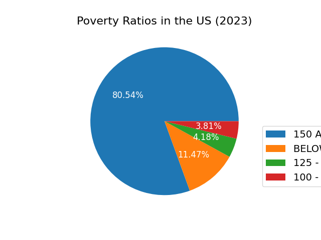
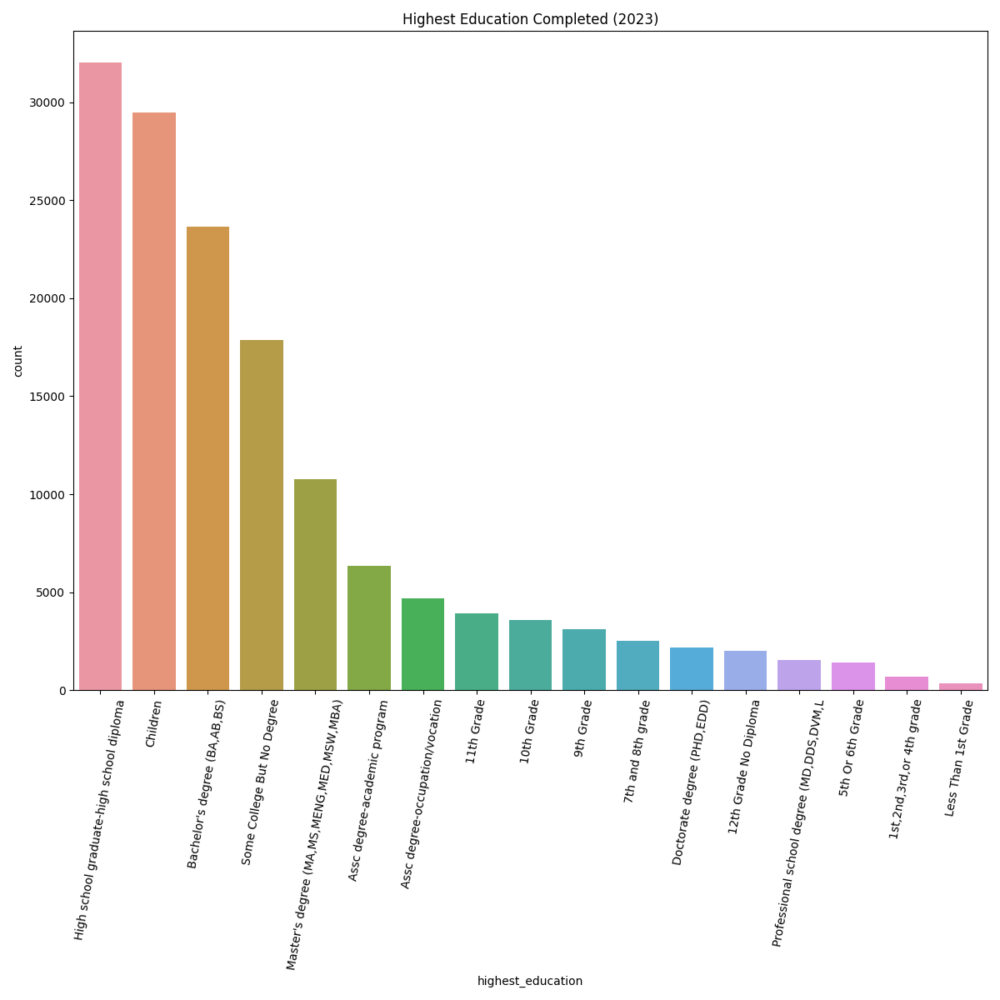
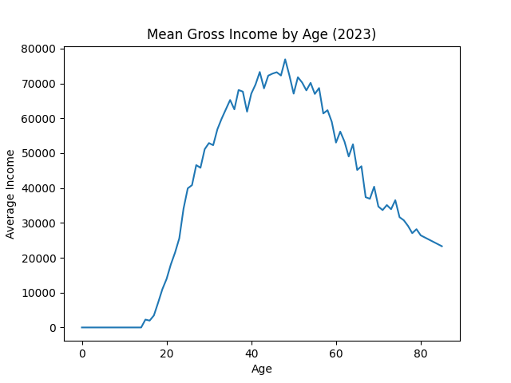
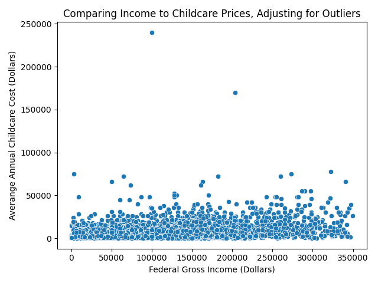
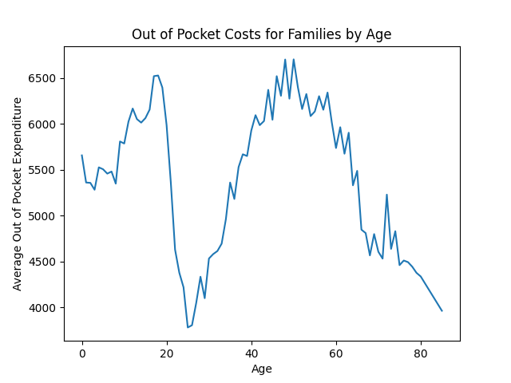
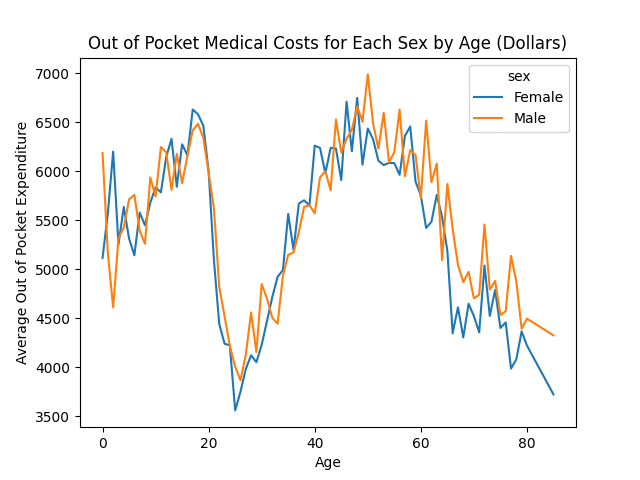
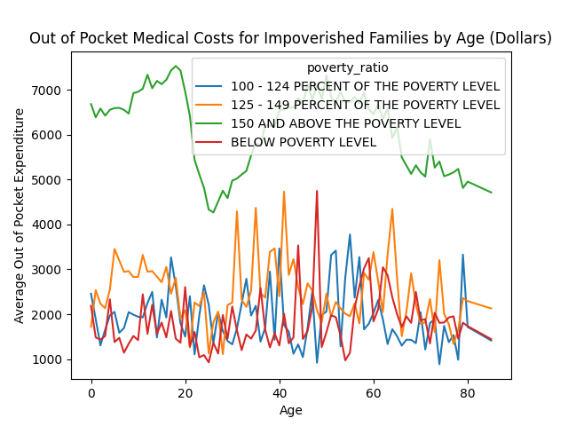
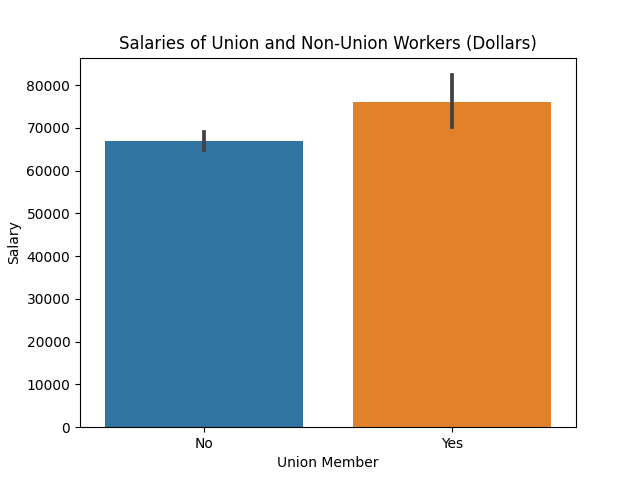
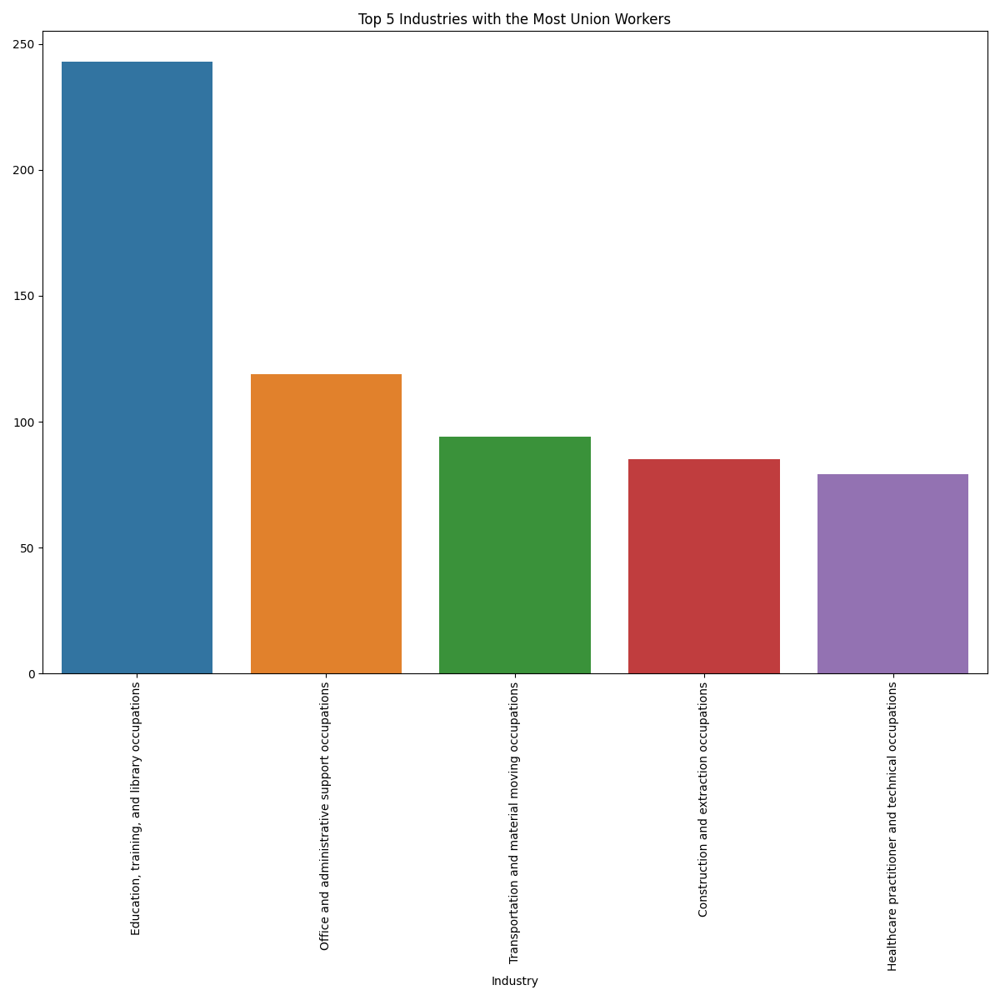

The data used in the following models is pulled directly from the United States Census and their API. More specifically the data is pulled from the most recent Current Population Survey Annual Social and Economic Supplement which provides a pulse measurement of the financial stability in the United States. The base API url for such data can be found at the core API enpoint: http://api.census.gov/data/2023/cps/asec/mar. According to the organizers of the census the survey provides an annual population profile based upon both labor and expenditures. This means that
To pull the data used in this project, apply the following API url in a python GET request:
"https://api.census.gov/data/2023/cps/asec/mar?
get=A_LINENO,
A_AGE,
A_DTIND,
A_DTOCC,
A_ENRLW,
A_EXPLF,
A_FAMNUM,
A_FTLF,
A_FTPT,
A_HGA,
A_HSCOL,
A_GRSWK,
A_HRLYWK,
A_HRS1,
A_LFSR,
A_MARITL,
A_MJOCC,
A_SEX,
A_UNCOV,
A_UNMEM,
A_UNTYPE,
A_WKSLK,
A_WKSTAT,
AGE1,
AGI,
CHCARE_YN,
HCHCARE_VAL,
HCHCARE_YN,
COV_CYR,
DEPPRIV,
ESICOULD,
FAMLIS,
FEARNVAL,
FFPOS,
FMED_VAL,
FMOOP,
FOTC_VAL,
FRNTVAL,
GESTFIPS,
GTCBSAST
&for=state:*
&key=INPUT_PERSONAL_KEY_HERE"
Said API request produces a json file that can be later converted into a dataframe as needed for a given programming language.
The raw file is as follows:
[['A_LINENO',
'A_AGE',
'A_DTIND',
'A_DTOCC',
'A_ENRLW',
'A_EXPLF',
'A_FAMNUM',
'A_FTLF',
'A_FTPT',
'A_HGA',
'A_HSCOL',
'A_GRSWK',
'A_HRLYWK',
'A_HRS1',
'A_LFSR',
'A_MARITL',
'A_MJOCC',
'A_SEX',
'A_UNCOV',
'A_UNMEM',
'A_UNTYPE',
'A_WKSLK',
'A_WKSTAT',
'AGE1',
'AGI',
...
'0',
'23',
'2',
'23'],
...]
This ultimately will pull a dataset after reformatting the JSON to look like the following
| Unnamed: 0 | A_LINENO | A_AGE | A_DTIND | A_DTOCC | A_ENRLW | A_EXPLF | A_FAMNUM | A_FTLF | A_FTPT | ... | FAMLIS | FEARNVAL | FFPOS | FMED_VAL | FMOOP | FOTC_VAL | FRNTVAL | GESTFIPS | GTCBSAST | state | |
|---|---|---|---|---|---|---|---|---|---|---|---|---|---|---|---|---|---|---|---|---|---|
| 0 | 1 | 1 | 67 | 0 | 0 | 0 | 0 | 0 | 0 | 0 | ... | 1 | 0 | 1 | 0 | 0 | 0 | 0 | 23 | 4 | 23 |
| 1 | 2 | 1 | 74 | 0 | 0 | 0 | 0 | 0 | 0 | 0 | ... | 1 | 0 | 1 | 0 | 60 | 60 | 0 | 23 | 4 | 23 |
| 2 | 3 | 1 | 66 | 0 | 0 | 0 | 0 | 1 | 0 | 0 | ... | 4 | 0 | 1 | 0 | 0 | 0 | 0 | 23 | 3 | 23 |
| 3 | 4 | 2 | 68 | 0 | 0 | 0 | 0 | 1 | 0 | 0 | ... | 4 | 0 | 1 | 0 | 0 | 0 | 0 | 23 | 3 | 23 |
| 4 | 5 | 1 | 52 | 0 | 0 | 2 | 0 | 1 | 0 | 0 | ... | 4 | 42000 | 1 | 50 | 1370 | 0 | 0 | 23 | 3 | 23 |
5 rows × 42 columns
Much of the data cleaning and preparation involved ensuring that the datafram was in a generalized, readable format such that it can be adjusted as neccessary for future machine learning models. This began with renaming each of the columns away from the original code to a name that is more representative of the feature itself. Additionally, features found to be redundant, i.e. many of the features that had been recoded, were dropped entirely from the dataset in favor of the recoded values. As such much of the data was left in, with minimal need for dropping instances where an individual was "not in [a given] universe." In these cases it was frequently found that where an indvidual was found not to be in the universe, they did not meet the qualifications of whatever demographic was being measured. For example, if somebody had income above the poverty line, they would be considered not in universe under the field measuring poverty ratios, however, they still have pertinent data in other fields. As such a trade off was made here, keep in much of the technically missing data such that a more accurate picture of the US was kept. However, this also means that future endeavors using each field will need to account for the fact that information was left in from the start. This will be documented and noted as is necessary depending upon the model or figure.
Furthermore, much of the original data had been encodedby the Census team into an integer format. Many of these cases were categorical fields, leaving the data unlabelled without the assistance of the data dictionary provided by the US Census. To account for this, and for ease of understanding, much of the data was reverted to its original categories. This will allow for future analysis and data labelling particularly in the case of facts and figures. Should there be a need for numerical inputs, said data will be reverted to a representative numerical grouping as it was originally. This also implies that all of the data was provided as an integer within the dataframe. As such all of this data was converted away from an integer and into a string where applicable, and each numerical feature was checked to keep each column consistent with its data.
Completing preliminary data cleaning produces a python dataframe to be used for machine learning models. The dataframe is as follows (trimmed to display 10 of 48 features):
| age | job_industry_recode | school_enroll_lastweek | employment | fam_size | ... | fam_otc_med_costs | fam_rent_val | fips | state | state | |
|---|---|---|---|---|---|---|---|---|---|---|---|
| 1 | 67 | Not in universe, or children | Not in univ. or children & Armed Forces | 0 | 0 | ... | 0 | 0 | ME | 4 | 23 |
| 2 | 74 | Not in universe, or children | Not in univ. or children & Armed Forces | 0 | 0 | ... | 60 | 0 | ME | 4 | 23 |
| 3 | 66 | Not in universe, or children | Not in univ. or children & Armed Forces | 0 | 1 | ... | 0 | 0 | ME | 3 | 23 |
| 4 | 68 | Not in universe, or children | Not in univ. or children & Armed Forces | 0 | 1 | ... | 0 | 0 | ME | 3 | 23 |
| 5 | 52 | Not in universe, or children | No | 0 | 1 | ... | 0 | 0 | ME | 3 | 23 |
| ... | ... | ... | ... | ... | ... | ... | ... | ... | ... | ... | ... |
| 146129 | 17 | Not in universe, or children | Yes | 0 | 1 | ... | 200 | 0 | HI | 2 | 15 |
| 146130 | 15 | Not in universe, or children | Not in univ. or children & Armed Forces | 0 | 1 | ... | 200 | 0 | HI | 2 | 15 |
| 146131 | 59 | Office and administrative support occupations | Not in univ. or children & Armed Forces | 1 | 1 | ... | 450 | 0 | HI | 2 | 15 |
| 146132 | 60 | Business and financial operations occupations | Not in univ. or children & Armed Forces | 1 | 1 | ... | 450 | 0 | HI | 2 | 15 |
| 146133 | 18 | Office and administrative support occupations | Yes | 1 | 1 | ... | 450 | 0 | HI | 2 | 15 |
146133 rows × 39 columns
Below the Mean federally adjusted gross income by state is displayed. The vast majority of high earners exist on the east coast with massachussetts and Virginia standing out. Although Colorado and Wahsington also demonstrate themselves to be among the top. Through this, efforts can be focussed into poorer areas of the country to help isolate and determine what policy measures are lacking in agiven state that adds to the income disparity

The below figure demonstrates the ratios of how poverty affects families across the US. Understanding how close the US is to the poverty level helps to bring an idea of exactly how successful current economic policy is. As demonstrated below, approximately 20% of the US is within reach of poverty, demonstrating a need for economic policy reform to help uplift said people. 
Furthermore, looking to the education levels in the US can provide some insight as to what factors may impact income levels for families. Typically tend to lead to higher salaries according to the BLS. Thus by analyzing how successful the education system in the US is, one can get a better understanding of how likely the US population is to succeed. According to the census data, in the figure below, the vast majority of the US population only has completed a high school degree at this point. 
Age and experience also plays a substantial factor in the average Americans ability to become financially stable. Displayed below the average income increases slowly over time until retirement age, peaking around age 50 (when more financially saavy people begin ro retire). Diving deeper into these correlations can help to better understand how and when to incentivize and better educate individuals on how to save for their futures and their retirements.
The below figure demonstrates childcare costs for the average American with children, after excluding those individuals that make statistically significantly more income. Through this graph it is evident that childcare costs are relatively fixed across all incomes with a few extremes. For the most part, childcare is less than 50000 dollars per year. However, that is a significant portion of income for those families that make less overally. This suggests that childcare in particular is something that could have fixed benefits targetting lower income families.
The first of the below graphs presents mean out of pocket medical costs by age in the US. Here there is a noticeable dip in insurance expenditure costs for individuals in their mid 20s. This either suggests that said individuals are the most healthy in the US, or, more likely, the drop in coverage from their parents inhibits them from being able to see doctors as frequently as needed. This is an area that needs to be investigated further and suggests a large population that may not be getting the healthcare they need.
Additionally, by looking into gender, groups and genders can be separated out to see if any particular population is skewing the data in a particular direction. While the dip here is not necessarily explained by gender differences, there is a clear increase in male expenditure as the population becomes drastically more elderly. This could suggest higher medical costs for men or greater current financial dependence on the current elderly male population who are already in retirement.
Lastly, in the below plot there is visible differentiation in expenditures and out of pocket costs for those who fall into poverty. This suggests that there is a large portion of people in the US forgoing medical procedures to include doctors visits simply due to their ability to pay. Those above the poverty line, who are more likely to have expendable income are spending nearly double that on medical costs than their impoverished neighbors.
Below presents the mean income for those who work within a union as opposed to those who are not, excluding outliers. Based on the graph it is evident that union members, on the average make nearly 10,000 more dollars annually than their non-union counterparts. There has been some push in recent years to increase the stregnth of American unions, however their power has declined in the past 60 years. Information such as this may provide insight into the workplace itslef as to why some Americans arestruggling more financially.
Lastly, the industreis with the most participation of workers in unions is presented below. Through this, it is possible to study how the industries interact with their workers and further establish how beneficial unions are in each industry. Furthermore, this can provide some insight into how to build more opportunities for employees to start unions in their own workplace by following in the footsteps of those who have already succeeded.
